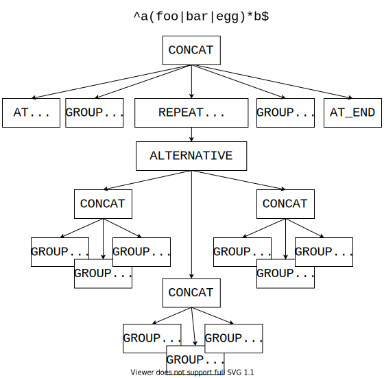
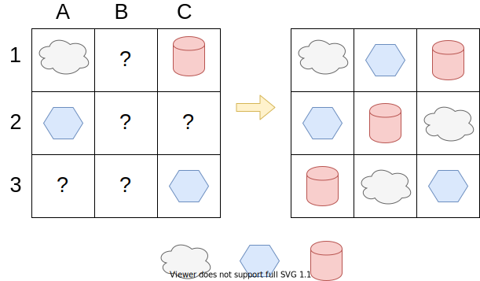

In this post we will write a simple regex library. The table below presents regex operators that we are going to support:
| Operator | Description |
|---|---|
A single character e.g. a, \n, \( |
A single character matches itself. Special characters need to be escaped e.g. \n.
|
Character groups e.g. [a-z], [^xyz] |
Character group matches any character
that is part of the group. Negated character group ( [^xyz])
matches any character that is not part of the group.Character ranges like a-z can be used inside groups.
A character c belongs to a-z range when its
numerical value falls between (int)'a' <= (int)c <= (int)'z'.
|
. wildcard |
. wildcard will match any single character.
For example ... will match any string consisting of three characters.
|
Concatenation e.g. abc,[0-9]-[0-9] |
Just as we can concatenate strings,
we may also concatenate regexes.
The resulting expression will match an input, only when the input can be split into two parts, so that
the first part of the input matches the first concatenated regex and
the second part of the input matches the second concatenated regex.
For example input 9X matches the regex [0-9][XYZ] because 9 matches [0-9] and X matches [XYZ].
|
Alternative e.g. Z|X|[0-9] |
Input matches the alternative when it matches
any branch of the alternative. For example inputs Z, X
and 3 will all match Z|X|[0-9] alternative because they match
respectively Z, X and [0-9] branches.
Alternative has lower priority than concatenation so foo|bar means (foo)|(bar), not fo(o|b)ar.
|
Repetition (quantification)
e.g. a*, [0-9]?, X{1,5} |
Preceding regex must match input specified number of times. Supported operators are:
For example
[0-9]* will match any string consisting of digits, including empty string.On the other hand [0-9]{2,3} will match strings consisting of two or three decimal digits.In our limited implementation we do not support spaces (or any other whitespace characters) inside {n,m} expressions.Repetition has higher priority than concatenation and alternative so foo{5} means fo(o{5}), not (foo){5}.Repetition operators are greedy, this means they will try to match as much input as possible. For example (a*)(a*) will match the aaaaa input in
the following way (aaaaa)() - the first a* will match
all the characters, leaving empty string for the second a* to match.
|
^ and $ anchors |
^ matches the beginning of the input.$ matches the end of the input.For example ^foo will match strings that start with
foo and bar$ will match strings that end with bar.
|
| Grouping (parentheses) |
Parentheses are used to alter the precedence of the operators. For example compare foo|bar with fo(o|b)ar,
the first one will match foo, the second one fooar.
|
The library itself is quite small, it consists of two parts: a parser and a matcher. The parser is a very simple recursive descent parser and as most of manually written parsers it probably contains some undiscovered bugs. The parser itself is not the main focus of this article, so we will tread it as a black box that consumes regular expressions in text form and produces equivalent ASTs or Abstract Syntax Trees.
ASTs are tree like data structures,
that make order of operator evaluation and the internal structure of a regular
expression explicit.
Let’s see this on an example. The AST representation of
^a(foo|bar|egg)*b$ regex is:

The anchors ^ and $ are represented by their own
AST nodes AT_BEGINNING and AT_END.
To represent both character groups and single characters, we use
GROUP nodes. GROUP nodes are very simple, they contain a list
of characters that they match. A GROUP node for [0-9] regex
contains characters 0123456789 in the list.
For negated groups like [^0-9] we use NEGATED_GROUP node,
the representation is the same as for GROUP (we keep 0123456789 characters
in the list).
Next is the tricky one, we use NEGATED_GROUP without any characters
to represent wildcard (.). This makes sense because an empty group []
does not match anything, so its negation will match all characters.
To represent quantification operators like ?, +, * and {n,m}
we use REPEAT nodes. REPEAT nodes contain two additional attributes:
minimum and maximum number of allowed repetitions.
We use Long.MAX_VALUE to signify that maximum number of repetitions is unbound.
Finally we use CONCAT node to represent concatenation of two or more
regular expressions.
In the code all AST nodes are represented by a single class
called RAst:
public class RAst {
public final RAstType type;
public final Set<Character> chars;
public final List<RAst> exprs;
// Repeat from to, both inclusive
public final long repeatMin;
public final long repeatMax;
// ...type field describes what kind of AST node this instance
represents e.g. CONCAT.
GROUP and NEGATED_GROUP nodes keep the set of matched/not-matched
characters in chars field.
CONCAT and ALTERNATIVE nodes keep their children in exprs field
(the order of children is important, hence a List).
REPEAT node keeps its only child as a single element list in exprs field.
The matcher is represented in the code by BacktrackingMatcher class.
The interface of the matcher is very simple:
public class BacktrackingMatcher {
public static Match match(String s, RAst regex);
}
public class Match {
public final boolean hasMatch;
public final String input;
public final int start;
public final int end;
public String matched() {
if (!hasMatch) return null;
return input.substring(start, end);
}
}Our matcher will only find the first substring of the input that matches the regex. Yet it would not be too difficult to extend the algorithm to find all matches (start matching again after the end of the previous match).
To implement our matcher we will use an algorithm design technique
called backtracking. The general idea of backtracking is
very simple: we enumerate all the possible solution candidates
in a smart way and then we return the first candidate that is a valid solution.
The part “in a smart way” is very important, usually
enumerating all solution candidates will result in a very
slow algorithm (think O(2^n) or even O(n!)).
The key here is to quickly and early reject some subsets of
the solutions candidates.
Let’s see this on a very simple example,
say we want to solve a puzzle that is about placing various shapes in 3x3 grid. Some places in the grid are already taken. There is also a rule that describes a valid solution: in every row and column we cannot have two shapes of the same kind.

Simple enumeration of all possible assignments of the shapes to the free places
will generate 3^5 solution candidates, most of them wrong.
A smarter candidate generation strategy
would be to check immediately after we fill a free place,
if the solution conditions still holds for this place row and column.
This would save us a lot of work, because we could discard a lot of
solution candidates much more early in the process.
For example we could discard all the solution candidates that have
Cloud shape at 1B position in the first step of the algorithm.
The name of the technique itself comes from the specific way in which the algorithm generates all the solution candidates. The naive backtracking algorithm that solves our simple puzzle looks like this:
// Board positions:
// [0 | 1 | 2]
// [3 | 4 | 5]
// [6 | 7 | 8]
// Notice that rowIndex = currentPosition / 3
// and colIndex = currentPosition % 3
private boolean solve(char[][] board, int currentPosition) {
if (currentPosition == 9) {
// All places are filled, check if this
// candidate is a valid solution.
return isValidSolution(board);
}
if (isPlaceTaken(board, currentPosition)) {
// Move to checking the next place.
return solve(board, currentPosition+1);
}
// Try putting all shapes in the free place
for (char shape: new char[] { 'C', 'H', 'R' }) {
putShape(board, currentPosition, shape);
if (solve(board, currentPosition + 1)) {
return true;
}
// Clear position or BACKTRACK.
putShape(board, currentPosition, '?');
}
return false;
}The key part of the algorithm is the for loop,
where we put a shape on the free place and then remove it
when don’t find a solution. This removal
or taking a move back is what gave the algorithm its name.
Alternatively we may say that when solve returns false,
then the board is exactly in the same state as it was
before we called solve.
Matching regular expression is somehow similar to solving our previous puzzle.
At each step we have several possibilities, like should we match foo
or fo from the alternative (foo|fo). How much characters should
f+ expression match? Should (bar)? match bar or nothing?
On the other hand the most complexity in matching regular expressions
comes from the fact that we are matching a recurrent structure (tree).
It’s like matching our puzzle, but where each empty place can contain
another smaller version of the same puzzle that also must be solved.
The main entry point to our regex matching algorithm is
@FunctionalInterface
public interface Cont {
boolean run();
}
boolean match(Input input, RAst ast, Cont cont)method. It takes three parameters, input which is just
the input String plus a pointer called pos that tracks next, not yet
matched character. Input also provides helpful methods that can
be used to save and restore pos value (we will need that
for backtracking). Next parameter, ast, is an AST subtree that the algorithm
should match. The last parameter cont is the most interesting one.
In my previous blog post I wrote about
continuations, please read that post before
going further. cont is lambda expression (but we may thread it also as
a kind of continuation), that when called will
try to match remaining part of the regex AST (e.g. it will match parents
and the remaining siblings nodes of ast node).
The contract of match method is as follows.
If the method is not able to match ast subtree it will
return false, cont will not be called and the input
will not be modified (or it may be restored to the original state).
On the other hand if ast subtree could be matched then
cont will be called with the modified input and
match will return whatever cont returns.
Before returning value to the client input will be restored
to the original state (this is not strictly necessary if we
are looking for the first match but somehow makes algorithm more elegant).
At the top level we will call match somehow like this:
int startIndex = input.currentPos();
AtomicInteger endIndex = new AtomicInteger(0);
boolean hasMatch = match(input, regex, () -> {
endIndex.set(input.currentPos());
return true;
});This call means that we are looking for the matches
starting at index startIndex and if we find one
we save the
end of the match in the endIndex variable and return true
to signify that matching process should stop.
This is the only place in the algorithm where we use
return true. Matched substring could be easily
retrieved as input.substring(startIndex, endIndex).
The body of match method is a giant switch statement that
delegates matching of different AST types to different methods (not counting simple
operators):
public static boolean match(Input input, RAst ast, Cont cont) {
RAstType type = ast.type;
InputPositionMarker m = null;
switch (type) {
/* some cases skipped */
case GROUP:
if (input.atEnd()) return false;
if (ast.chars.contains(input.current())) {
m = input.markPosition();
input.advance(1);
try {
return cont.run();
} finally {
input.restorePosition(m);
}
}
return false;
case CONCAT:
return concatRec(input, ast.exprs, 0, cont);
case ALTERNATIVE:
return alternativeRec(input, ast.exprs, 0, cont);
case REPEAT:
return repeatRec(input, ast, 0, cont);
default: throw new AssertionError("Unknown AST type: " + type);
}
}Let’s take a look how matching a GROUP is performed.
If the group matches next input character, we save the current
input pointer in m variable, then we advance the input pointer
and finally we call cont to match the
rest of the regex. After cont returns we restore the input position
using finally block. This is a bit hacky but it works.
Matching CONCAT node is also simple. We use recursion to match
subsequent children expressions:
private static boolean concatRec(Input input,
List<RAst> exprs,
int currExpr,
Cont cont) {
if (currExpr == exprs.size()) {
// We matched all the children
return cont.run();
}
// Match exprs.get(currExpr) child
return match(input, exprs.get(currExpr), () ->
// If it succeeded then match next child expression
concatRec(input, exprs, currExpr + 1, cont)
);
}Notice that because we are not consuming any input here we have nothing to restore.
Similarly ALTERNATIVE is easy to match:
private static boolean alternativeRec(Input input,
List<RAst> expr,
int currExpr,
Cont cont) {
if (currExpr == expr.size()) {
// We tried all branches but found no match.
return false;
}
// Try matching expr.get(currExpr) branch of the alternative
boolean matched = match(input, expr.get(currExpr), cont);
// We found a match
if (matched) return true;
// No match found - Let's try next alternative "branch"
return alternativeRec(input, expr, currExpr+1, cont);
}Here currExpr points to the current alternative branch that we are matching.
Instead of using recursion we may implement alternativeRec
using a simple for loop, which I left as an exercise for the reader.
Matching REPEAT node causes the most troubles, because all
quantification operators are greedy by default. This means that
e.g. a+ will try to match as much characters as possible.
To implement this behavior we first attempt to match REPEATs child subtree
as many times as possible, then we move “backwards” calling cont
each time to check if we have a match.
The diagram below illustrates this process:
We match a+ expression:
a
a a
a a a // We matched a three times.
a a a noMatch // Forth time we have noMatch.
a a a cont() // We move backwards, calling cont()
a a cont() // each time until it returns true.
a cont() match // cont() returned true.
// We stop moving backwards and return true from a+.The code of repeatRec is:
private static boolean repeatRec(Input input,
RAst repeatAst,
long matchCount,
Cont cont) {
// For expressions like R{n,m} do we have
// more matches than necessary?
if (matchCount > repeatAst.repeatMax)
return false;
// Greedy matching as much as possible.
boolean matched = match(input, repeatAst.headExpr(), () ->
repeatRec(input, repeatAst, matchCount+1, cont)
);
// We are moving backwards, calling `cont` each time.
// We also make sure that we have min number of matches
// for expressions like R{n,m}.
if (!matched && (matchCount >= repeatAst.repeatMin)) {
return cont.run();
}
return matched;
}And generally that’s it. Our simple regex engine.
There are some details left (like handling ^ or $ or
moving startIndex) but the idea behind the backtracking
matcher should now be familiar to us.
You can find source code for the engine (including tests) on GitHub: https://github.com/marcin-chwedczuk/reng. But before you jump to see the code I really recommend you to write a similar engine (in your favorite language) yourself. This will give you a much more deeper understanding of the algorithm.
Last but not least, our algorithm has a decent performance,
given that we use reasonable regexes and inputs.
A regex like (a+)*c matched on the input aaaaaaaaaaaaaaaaaaaaaaaaaaaab
will have a very bad performance. This is a common problem
not only in our matcher but in most regex libraries
that use backtracking algorithms. You can
read more about this problem on Wikipedia.